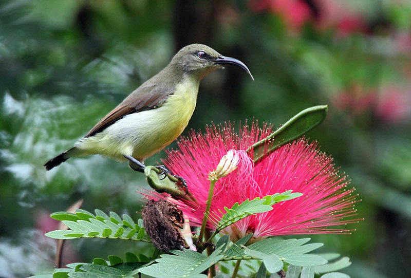

पर्पल-रम्प्ड सनबर्डPurple-rumped Sunbird
Leptocoma zeylonica · Nectariniidae · BRD-0168

- Scientific name वैज्ञानिक नाम
- Leptocoma zeylonica (Linnaeus, 1766)
- Family कुल
- Nectariniidae
- Hindi हिंदी
- पर्पल-रम्प्ड सनबर्ड
- Local names स्थानीय नाम
- purple rumped sunbird, purple-rumped sunbird, chhota shakkarkhora, sunbird
- Status here यहाँ की स्थिति
- native
- Movement आवागमन
- Resident, here all year
- IUCN IUCN
- LC
- Review समीक्षा
- audited and independently read
When to look कब देखें
Present all year. साल भर मौजूद।
Uses and possibilities उपयोग और संभावनाएँ
Drawn from the documented uses in the profile below, where each is labelled traditional, current or a research lead. All uses →
Tell it apart from इनसे अलग पहचानें
जामुनी रम्प्ड सनबर्ड / Purple-rumped Sunbird
Leptocoma zeylonica (Linnaeus, 1766) — Nectariniidae
शक्कर खोरा — सदा आने वाली चिड़िया। गर्मी में, सर्दी में, बारिश में — हमेशा बगीचों में मिलती है, जहाँ कुछ न कुछ फूलता रहे। नर चिड़िया की पीठ और गला नीला-बैंगनी-हरा, सीना गहरा लाल-बैंगनी (maroon) — सुबह की धूप में चमकती है। पत्नी सादी जैतूनी-हरी होती है। पतली, घुमावदार चोंच से फूलों में झाँकता है — अनजाने पराग भी ले जाता है। छोटी सी छोटी चिड़िया (10-11 सेंटीमीटर), पर इसका दिल बहुत बड़ा — दिन में सैकड़ों बार फूल भेंट करता है। यही फूलों का सबसे खिलंदड़ पक्षी है।
Quick Identification त्वरित पहचान
| Feature | Description |
|---|---|
| Size | 10–11 cm; 6–8 g — among India's smallest resident birds |
| Male (breeding) | Metallic blue-purple upper body; glossy maroon-crimson chest and upper belly; black lower belly |
| Male (eclipse/non-breeding) | Olive-green above, pale yellow below — very similar to female — but retains dark streak on throat |
| Female | Olive-green above; pale yellow-white below with faint olive streaking |
| Bill | Long, slender, strongly decurved — shaped for probing narrow tubular flowers |
| Tail | Short; purple-blue (especially on males) with outer feathers edged yellow |
| Call | Sharp, rapid chwit-chwit or tzee-tzee; male sings musical twittering song from exposed perch |
| Behaviour | Perches to probe flowers; feeds deliberately; agile in dense vegetation; solitary or paired |
Field tip: Look in gardens on flowering shrubs like Calotropis, Neem, Hibiscus, Ixora, and banana flowers. The breeding male is unmistakable — electric iridescent blue-purple and deep maroon in morning sun. Eclipse males and females look olive-brown and pale — confuse them with flowerpeckers, which are smaller and have straight bills. The decurved bill is the key ID mark. The sharp chwit call often gives the bird away.
Morphology आकारिकी
Biometrics (subspecies zeylonica, the form across India including eastern UP):
| Measurement | Range |
|---|---|
| Total length | 100–110 mm |
| Wing (flattened chord) | 50–56 mm |
| Tail | 30–35 mm |
| Tarsus | 13–15 mm |
| Bill (culmen from base) | 17–22 mm |
| Weight | 6–9 g |
Body: Compact, stocky build; short tail; legs short and thin; posture upright or slightly tilted when perching on flowers.
Plumage — Breeding male: Crown and back iridescent blue-purple, with glossy maroon-crimson pectoral band and chest. Belly black. Throat can appear deep purple or maroon depending on light angle. Lower belly and undertail coverts blackish. Tail iridescent blue-purple, with outer rectrices edged yellow.
Plumage — Non-breeding male (eclipse): Moults to dull olive-green above and pale yellow below — nearly identical to female — but retains a dark streak down the throat and a faint purple tint on the back. Eclipse plumage occurs June–August.
Plumage — Female: Olive-green above; pale yellow-white below; faint supercilium; no dark throat streak.
Bare parts: Bill long (17–22 mm), slender, strongly decurved (curved downward) — perfectly adapted to probe deeply into tubular corollas. Eyes dark. Legs dull yellowish or pale blue-grey.
Tongue: Brush-tipped, tubular, acts as a grooved channel for nectar extraction.
Vocalisations
The Purple-rumped Sunbird is vocal throughout the year, especially during breeding.
- Contact and flight call: A sharp, high-pitched chwit or tzee, often repeated as the bird moves between flowers.
- Song (breeding male): A rapid, excited, buzzy twittering song with a few clear notes interspersed; delivered from an exposed perch; high-pitched and rapid.
- Alarm call: A rapid, harsh chattering when a predator (hawk, cat, snake) approaches.
- Subsong: A soft, rambling warble given during non-breeding months, occasionally audible from perched birds.
Ecological Role पारिस्थितिक भूमिका
Nectarivore and pollinator: The Purple-rumped Sunbird is a specialized nectarivore, like hummingbirds in the Americas. It visits a wide variety of flowering plants and transfers pollen on its forehead and bill. Key nectar sources in eastern UP include:
- Calotropis gigantea (madar)
- Ocimum tenuiflorum (tulsi)
- Madhuca longifolia (mahua)
- Azadirachta indica (neem flowers)
- Lantana camara
- Hibiscus, Bougainvillea, Ixora, banana flowers
- Erythrina species (coral trees)
Insectivore during breeding: Despite being primarily nectarivorous, sunbirds shift heavily to insects and spiders during breeding season (February–May) to feed chicks. Nestlings require protein-rich insects for proper development.
Mutualism with specific flowers: Shows preference for tubular flowers and avoids flowers with open corollas. The bird has coevolved with various flowering plants; the red and orange flowers of Calotropis and Erythrina are particularly attractive.
Bioindicator of floral diversity: The presence of sunbirds indicates a garden or habitat with diverse flowering plants throughout the year. Their absence often suggests monoculture planting or extensive pesticide use.
Life Cycle / Phenology जीवन चक्र
| Month / Season | Event |
|---|---|
| January | Courtship displays begin; males sing regularly from exposed perches |
| February–May | Breeding peak; pairs construct pendant nests; eggs laid, incubated, chicks raised |
| June–August | Post-breeding moult; males acquire dull eclipse plumage; second brood possible |
| September–November | Post-moult; plumage restoration; return to full breeding colours |
| December–January | Full breeding plumage restored; cycle repeats |
Nest: A remarkable construction — a small purse-like pendant nest (5–6 cm long) suspended from a branch tip or telephone wire. Constructed from plant down, spider silk, bark strips, and feathers; outer surface decorated with spider egg sacs and lichen for camouflage. A side entrance hole prevents predator access.
Clutch: 2 eggs; pale greenish-grey with brown spotting.
Incubation: ~14–15 days; female incubates; male feeds female during incubation.
Fledging: ~17–18 days; male assists in feeding chicks.
Eclipse plumage: Males moult post-breeding (June–August) to female-like olive-brown plumage; retain dark throat streak. This moult lasts 8–10 weeks.
Lifespan: Up to 5–6 years in the wild.
Host Plants or Prey आहार
Nectar sources (primary food):
- Calotropis gigantea (madar) — preferred
- Ocimum tenuiflorum (tulsi)
- Madhuca longifolia (mahua)
- Azadirachta indica (neem)
- Lantana camara
- Hibiscus, Bougainvillea, Ixora
- Banana flowers
- Erythrina species
- Moraea iridioides (cape lily)
Arthropod prey (chick-rearing, February–May):
- Spiders (especially jumping spiders; Salticidae family)
- Small flying ants
- Aphids and scale insects
- Flies and tiny beetles
- Flower-visiting insects intercepted at flowers
Predators / Natural Enemies शत्रु
- Shikra (Accipiter badius) — primary avian predator; fast hedge-hugging approach; occasional successful capture
- Indian Chameleon (Chamaeleo zeylanicus) — ambushes at dense flower clusters
- Snakes: Indian rat snakes and vine snakes occasionally raid nests
- Crows: General nest predation and mobbing of nesting pairs
- Parasites: Blood-sucking hippoboscid flies (Ornithoctona sp.) occasionally parasitize adults and nestlings
Agricultural / Human Relevance कृषि प्रासंगिकता
Pollinator of sacred and food crops: The Purple-rumped Sunbird pollinates several plants of cultural and culinary importance in eastern UP:
- Tulsi (Ocimum tenuiflorum) — sacred Hindu plant; medicinal use
- Neem (Azadirachta indica) — timber, medicinal, insecticidal uses
- Mahua (Madhuca longifolia) — flowers used for food and alcohol fermentation; important tribal resource
- Various fruit-garden plants in orchards
Cultural icon: One of the most visually striking garden birds in UP, known widely as shakkar khora (sugar sucker) or meetha pakshi (sweet bird). Celebrated in Mughal miniature paintings as a symbol of beauty, grace, and spiritual connection. The iridescent plumage has made it a subject of ornamental art and literature across South Asia.
Protected status: All Indian sunbirds are protected under the Wildlife (Protection) Act, 1972, Schedule IV. Capture and caging are illegal.
Ecological health indicator: The presence and abundance of sunbirds in gardens correlates directly with floral diversity. Gardens with year-round flowering plants support resident sunbird populations; gardens with monoculture plantings or heavy pesticide use lose sunbirds.
हिंदी: तुलसी, नीम, महुए के फूलों का परागणकर्ता।
बगीचे में फूलों की विविधता का संकेतक।
पक्षी संरक्षण अधिनियम, 1972 के तहत संरक्षित।
मुगल चित्रकला में सौंदर्य का प्रतीक।
Expected Locally स्थानीय रूप से अपेक्षित
Not a field record. Written from published accounts for eastern Uttar Pradesh. No confirmed local sighting yet — if you have seen it, that is what the atlas needs.
अभी तक स्थानीय पुष्टि नहीं। यह विवरण प्रकाशित स्रोतों से है, किसी अवलोकन से नहीं।
The Purple-rumped Sunbird is to be expected year-round in Basti district in gardens, village orchards, and flowering scrubland. Published range places it throughout eastern UP wherever flowering trees and shrubs are available. Look for breeding males displaying their iridescent plumage on exposed flowering perches during February–March. During monsoon (June–August), eclipse males and females may be difficult to distinguish from flowerpeckers. The hanging pendant nest should be sought during breeding season (February–May). The first local record would require a photograph showing the breeding male's metallic blue-purple and deep maroon plumage visiting flowers, or a photograph of the distinctive pendant nest, with date and location.
Distribution वितरण
Global range: Widespread throughout South Asia, from Sri Lanka and southern India through the Indian subcontinent to Bangladesh and Myanmar.
In India: Found throughout the country south of the Himalayan foothills, especially common in the peninsular regions and eastern India.
In Uttar Pradesh: A common and widespread resident in all districts with flowering vegetation; particularly abundant in gardens and forest margins.
In Basti district / eastern UP: Highly common year-round resident in all suitable habitats (gardens, orchards, scrubland with flowering shrubs).
Research Questions शोध प्रश्न
- Does the Purple-rumped Sunbird act as an effective pollinator of Tulsi and Neem in Basti district? — Measure fruit/seed set in flowers accessible vs. inaccessible to sunbirds.
- Which flowering species provide the most critical nectar resource during the dry season (February–April) when many plants are not flowering? — Track sunbird visitation across seasons and plant species.
- How does the male's eclipse plumage duration vary with latitude across the UP population? — Collect data on moult timing from bird-banding or museum specimens.
- Do sunbird pairs show site fidelity — do they return to the same garden territory year after year? — Mark and track individual birds; observe territory occupancy over years.
- How does urbanisation and garden homogenisation (single-species plantings) affect sunbird density and breeding success in peri-urban Basti? — Compare sunbird abundance in diverse gardens vs. monoculture plantings.
Similar Species मिलती-जुलती प्रजातियाँ
| Species | Key Difference | हिंदी | |
|---|---|---|---|
| Cinnyris asiaticus — [[purple_sunbird\ | Purple Sunbird]] (sister species) | Similar; slightly smaller; male has black belly extending onto chest; more purple overall on male; rare in eastern UP | बैंगनी सनबर्ड — पूर्वी यूपी में दुर्लभ |
| Cinnyris jugularis — Olive-backed Sunbird | Male has yellow underparts (not maroon/purple); restricted to northeast India; no range overlap | पीला-पेट सनबर्ड — पूर्वोत्तर भारत में | |
| Dicaeum concolor — Plain Flowerpecker (female confusion) | Much smaller (8–9 cm); shorter, straighter bill; no iridescence; different behaviour | फूलचबैया — छोटी, सीधी चोंच |
Field rule: A small (10–11 cm), iridescent sunbird with the breeding male showing electric blue-purple upper body and deep maroon chest (visible in morning sun), visiting tubular flowers with a decurved bill — is the Purple-rumped Sunbird. In gardens with year-round flowering plants, the species is resident and present every day. The distinctive decurved bill and iridescent colouring separate it from similar-sized flowerpeckers.
Taxonomy & Classification वर्गीकरण
Original description. Leptocoma zeylonica was described by Carl Linnaeus in 1766 in Systema Naturae, 12th Edition. Originally placed in the genus Certhia (creepers), it was later transferred to Nectarinia and more recently to Leptocoma. The species name zeylonica refers to Ceylon (now Sri Lanka), the type locality.
Subspecies. Three subspecies are currently recognised:
| Subspecies | Authority | Range | Notes |
|---|---|---|---|
| L. z. zeylonica | (Linnaeus, 1766) | Sri Lanka to southern India | Nominate form — recorded across Indian subcontinent including eastern UP |
| L. z. longicauda | (Jerd.) | Andaman and Nicobar Islands | Island population; larger tail |
| L. z. media | (Sykes) | Western India (Nilgiris, Deccan) | Slightly different coloration |
Family and order placement. Placed in the order Passeriformes, family Nectariniidae (sunbirds and spiderhunters), subfamily Nectariniinae. The family contains about 145 species in 16 genera across Africa and Asia. Sunbirds show remarkable convergent evolution with New World hummingbirds, occupying an identical ecological niche.
Phylogenetic notes. The genus Leptocoma is closely related to Cinnyris and Aethopyga. Within Leptocoma, L. zeylonica and L. asiatica are sister species (closely related).
IUCN status rationale. Evaluated as Least Concern (LC). The species has a very large range, stable population, and no significant threats documented. It adapts well to human-modified gardens and agricultural systems.
Photo Gallery फोटो गैलरी
Note: Add field photos tomedia/species/purple_rumped_sunbird/
फोटो निर्देश: नर का आईरिडेसेंट बैंगनी-लाल रंग (सुबह की धूप में), मादा का जैतूनी रंग, और पेंडेंट घोंसला।
Photos needed आवश्यक फोटो
- [ ] Breeding male in iridescent plumage (नर — बैंगनी-लाल, सुबह की धूप में)
- [ ] Female or eclipse male (मादा — जैतूनी-पीली)
- [ ] At flower (फूल पर — चोंच अंदर)
- [ ] Pendant nest on branch (पेंडेंट घोंसला)
No photos yet — add field photos to media/species/purple_rumped_sunbird/ and run node scripts/sync_photos.js.
References संदर्भ
- Linnaeus, C. (1766). Systema Naturae per regna tria naturae, Editio Duodecima, Reformata. Laurentii Salvii, Holmiae. [original description]
- Ali, S. & Ripley, S.D. (1987). Handbook of the Birds of India and Pakistan, Vol. 6. Oxford University Press, New Delhi.
- Grimmett, R., Inskipp, C. & Inskipp, T. (2011). Birds of the Indian Subcontinent. 2nd ed. Oxford University Press, New Delhi.
- Bhatt, D. & Bhatt, B. (1994). Foraging and flower selection in Leptocoma zeylonica. Journal of the Bombay Natural History Society, 91(2): 208–226.
- BirdLife International (2024). Leptocoma zeylonica. IUCN Red List of Threatened Species. Ver. 2024.
- GBIF Occurrence Data — Leptocoma zeylonica, Uttar Pradesh (2010–2025).
Source file: species/fauna/birds/purple_rumped_sunbird.md